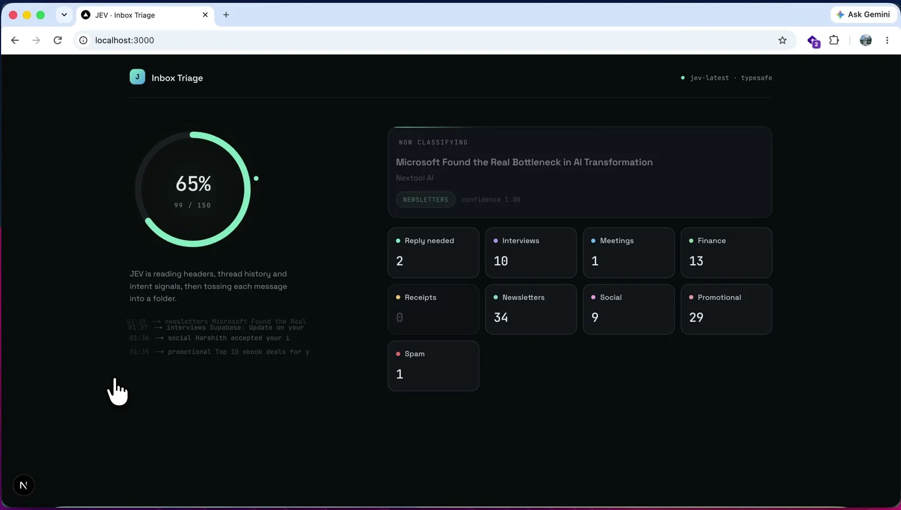
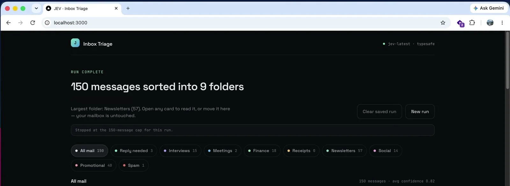

体験
分類結果を見せるだけで、Gmailには何も書き戻さない。完了画面の文言は「カードを開いて読むか、ここへ移す。受信箱はそのまま」で、誤分類があっても実害が出ない設計になっている。
- 処理中はフォルダ件数が増えていく様子が見え、待ち時間が長くても進み具合が分かる。
- 「Clear saved run」と「New run」で結果を捨て直せる。
- 平均confidence 0.82は、分類の正解率ではない。confidenceの意味を混同しない表示が要る。
- 既存の TUI型メール分類事例と異なり、移動・削除などの後続操作を持たないことが特徴。
キャプチャ
{kind=link}

（原寸の画像を開く）{kind=link}

（原寸の画像を開く）見る箇所進捗リング（65%・99/150）と処理中のメール、フォルダ別の件数、完了後の見出しと「your mailbox is untouched」の文言
入力から画面の変化まで
-
判断への入力
Gmailの直近のメール（この実行は150通の上限で停止）。画面には「JEVはヘッダー、スレッド履歴、意図のシグナルを読む」とある。
-
Jevの判断
各メールを9フォルダ（Reply needed、Interviews、Meetings、Finance、Receipts、Newsletters、Social、Promotional、Spam）のいずれかに振り分け、confidenceを付ける（処理中の例は1.00、平均0.82）。
-
結果がUIをどう変えるか
進捗リング、処理中のメールとフォルダ名、フォルダ別の件数タイル。完了後は「150 messages sorted into 9 folders」、フォルダの絞り込み、平均confidence。
- 判断型の見立て
- Choice推定
- 9つのフォルダから1つを選ぶ構成からの見立て。質問型は画面に明記されていない。
Jevとの適合
有限のフォルダから選ぶChoiceの典型で、大量処理と低コストの利点が出やすい。ただしこの画面は結果の閲覧までで、訂正が学習や設定に戻る仕組みは確認できない。
確認範囲と未確認事項
作者の投稿動画（localhost:3000上の実行）から静止画を確認。リポジトリは投稿で示されるがURLは確認できなかった。費用（0.08セント）は自己申告。画面に作者の個人メールが映るため、掲載フレームは集計・フォルダ部分に絞った。
- 確認済み動画から得た2枚の静止画に見える進捗、フォルダ別件数、読み取り専用の文言、上限150通の表示
- 未検証分類精度、フォルダ内カードの内容と訂正操作、費用（「80分の1セント」は自己申告）、リポジトリの中身
- 推定扱い質問型はChoiceと見立てているが、画面には明記がない
- 引用X投稿は2026-09-20（UTC）。動画から集計部分のみ切り出して引用（個人メールの表示部分は除外）。権利は作者に帰属する